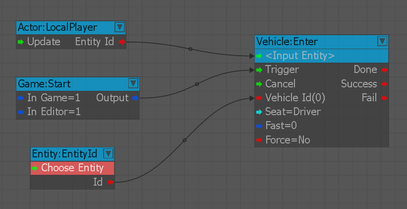

Overview
This article will give some examples on how each node for this section could be used.
Enter
Player enter vehicle on spawn.

This article will give some examples on how each node for this section could be used.
Player enter vehicle on spawn.
